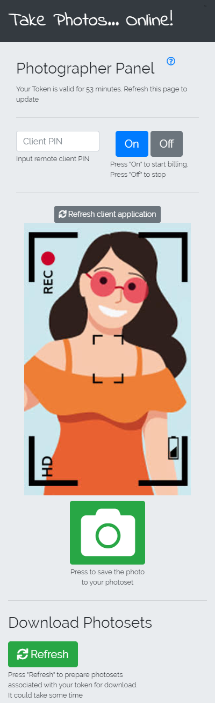

Руководство Пользователя
На этой странице вы найдете подробные шаги в использовании сервиса, а также ответы на популярные вопросы

Интерфейс страницы фотографа
Интерфейс страницы фотографа
Вы Фотограф
Вы производите фотосъемку, при помощи мобильного телефона вашего клиента, либо его подключенной к компьютеру веб-камеры.
-
1
Для начала работы у вас должны быть оплачены часы для работы с системой.
Процесс выглядит следующим образом: вы заказываете ключ доступа (token) на этой странице. Он будет действителен определенное время (1,2,5 часов). Расходовать это время можно в любых пропорциях и передавать кому угодно. Этот ключ является вашим кодом доступа в систему. Никакой регистрации и ваших данных не требуется, кроме email, на который поступит этот ключ. Для дополнительных средств оплаты свяжитесь с нашими амбассадорами или по почте contact@takephotos.online - 2 После подтверждения оплаты вы получите письмо, где будет указана ссылка на вашу рабочую страницу, которая будет уже привязана к полученному ключу. Открываете эту ссылку в любом удобном вам браузере, в том числе и с мобильного телефона. Наверху отображается остаток оплаченых минут сервиса.
- 3 Установите с вашим клиентом аудио связь в любом удобном для вас обоих приложении (Watsapp, Viber, Telegram, Skype и тд).
- 1 Отправьте вашему клиенту ссылку на сервис https://app.takephotos.online. Клиенту необхлдимо скопировать текст ссылки, вставить в окно браузера (поддерживаемые браузеры: iOS Safari, Android Internet, MacOS Safari, Windows Chrome) и перейти по ссылке.
- 2 Затем на странице клиента появится запрос доступа сервиса к камере. Ему следует выбрать пункт "Разрешить". Важно объяснить, что клиенту нельзя закрывать/сворачивать, переходить в другие приложения на протяжении всей съемки.
- 3 Далее на странице модели в верхней части появится PIN код. Клиент должен сообщить его вам. Введите PIN код в соответсвующее поле на своей рабочей странице. Нажмите кнопку "On" для начала получения изображения с камеры модели. С этого момента расходуется ваше оплаченое время и вы можете начинать съемку. Для завершения фотосессии нажмите кнопку "Off" и расход вашего предоплаченного времени будет приостановлен.
- 1 Для сохранения текущего кадра нажмите зеленую кнопку с изображением камеры. Он будет сохранен в максимально высоком качестве, которое доступно на устройстве вашего клиента.
- 2 После завершения съемки не забудьте нажать кнопку "Off", чтобы остановить расход времени вашего ключа.
- 3 Для выгрузки сохраненных фотографий нажмите на кнопку "Refresh" внизу экрана. После этого появится список фотосетов вашего текущего ключа, которые можно сохранить к себе на компьютер. Файлы будут доступны для скачивания от трех дней до недели.
Подготовка к съемке
Установка односторонней видео связи
Процесс съемки и выгрузка фото
Вы Клиент
Вы нашли фотографа, который будет фотографировать вас в режиме онлайн используя ваш телефон.
- 1 Перейдите по ссылке на приложение на вашем мобильном телефоне. Выберете пункт "Разрешить" когда появится запрос доступа сервиса к камере. Не закрывайте/сворачивайте, не переходите в другие приложения на протяжении всей съемки.
- 2 Установите аудио связь с вашим фотографом в любом удобном для вас обоих приложении (Watsapp, Viber, Telegram, Skype и тд).
- 3 Сообщите вашему фотографу одноразовый PIN код для предоставления доступа к вашей камере.
Хорошей съемки!

Интерфейс страницы клиента
Советы и примечания
- У клиента доступна функция выбора камеры телефона (фронтальная, задняя, другие взависимости от производителя), на которую будет производиться съемка
- Когда у клиента обновляется страница в целях безопасности может измениться PIN код
- При съемке в высоком разрешении плохое интернет соединение может приводить к сохранению кадров с задержкой или их потере
- Если изображение видео потока замерло дольше чем на 5 секунд, то кадры могут не сохраняться. Во избежание такой ситуации переподключитесь к клиенту нажав "Off", затем "On"
- Если вы выполнили переподключение несколько раз и все равно не видите изображение попросите клиента обновить страницу
- Рекомендуется снять несколько пробных кадров и сделать их выгрузку для проверки соединения в начале съемки